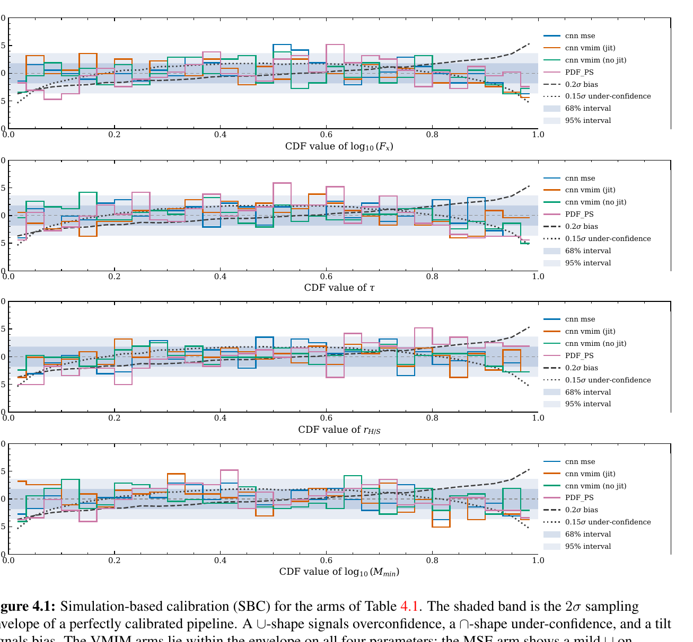
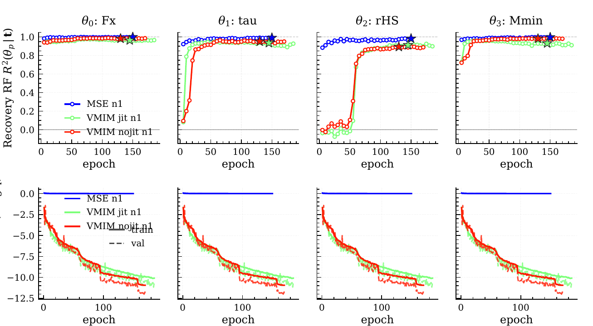

Results
Learned compression on raw cubes produces joint posteriors about fifty times smaller in volume than the published hand-crafted-summary result, with calibration that is close to ideal on most parameters.
Master comparison
| Arm | GV ×10−9 | σ log fX ×10−3 | σ τ ×10−2 | σ rH/S ×10−2 | σ log Mmin ×10−3 | χ̂2 fX | χ̂2 τ | χ̂2 rH/S | χ̂2 Mmin |
|---|---|---|---|---|---|---|---|---|---|
| Reference: direct inference, no learned compression (Semelin et al. 2025) | |||||||||
| PDF, GMM | 753 | 37.5 | 8.0 | 6.0 | 109 | – | – | – | – |
| PS, GMM | 133 | 24.0 | 7.5 | 4.9 | 87 | – | – | – | – |
| PDF + PS, GMM | 48 | 19.0 | 5.2 | 3.5 | 63 | – | – | – | – |
| Path A: MLP + VMIM on hand-crafted summaries, t ∈ R8 | |||||||||
| PDF + PS, NSF | 141 | 21.6 | 6.6 | 4.4 | 76 | 1.69 | 2.50 | 2.28 | 1.65 |
| Path B: 3D CNN on raw cubes, t ∈ R4 | |||||||||
| CNN + MSE, NSF | 6.7 | 5.4 | 1.2 | 1.8 | 9.8 | 1.34 | 1.45 | 1.28 | 1.14 |
| CNN + VMIM, no jitter, NSF | 1.4 | 5.4 | 1.1 | 2.4 | 8.7 | 1.42 | 1.03 | 0.62 | 1.33 |
| CNN + VMIM, jitter, NSF | 0.95 | 4.7 | 1.0 | 2.0 | 7.7 | 1.12 | 1.18 | 0.93 | 1.64 |
To inspect individual posteriors and rank histograms yourself, open the posterior explorer.
Raw cubes beat hand-crafted summaries
The best path B arm reaches GV = 0.95 × 10−9, a factor of about 147 below the best path A arm and about 50 below the uncompressed reference. Per parameter, relative to that reference, log fX tightens about 4.0 times, τ 5.2 times, log Mmin 8.2 times, and rH/S only 1.8 times. The gain is real everywhere but uneven, and smallest on the weak parameter.
Learned compression of the already-compact summaries makes things worse, not better: the joint volume grows by 1.20, 1.95 and 2.92 times on the PDF, PS and combined sets, and the loss grows as the input improves. Compression pays only when the input is genuinely oversized.
MSE versus VMIM
On width the result is narrow: VMIM is tighter jointly and on three marginals, while MSE is tighter on rH/S. On calibration it is clear. The jittered VMIM arm sits between 0.93 and 1.18 on fX, τ and rH/S, though it drifts to 1.64 on Mmin. The MSE arm is above tolerance on those same three parameters, and its rank histograms for log fX and rH/S are U-shaped. Its narrower rH/S interval excludes the truth too often.

How the compressor learns

Both VMIM arms encode fX immediately, Mmin within about twenty epochs and τ by epoch 40, but rH/S stays near R2 = 0 until roughly epoch 55 and then jumps to about 0.85. A run stopped earlier, or one watching only the loss, would export a summary with no rH/S information at all. The MSE probe is saturated from the start, but that is circular: its summary was trained to copy the parameters.
Estimator, jitter and noise
- Neural spline flows dominate. On identical summaries the NSF is best on generalised variance in almost every cell and never produced the one badly calibrated run, a Gaussian-mixture arm with jitter at ns = 1.
- Dequantisation is second-order. Jitter tightens the joint posterior by about 1.5 times and moves rH/S calibration from 0.62 to 0.93, with mixed effects on the other parameters.
- More noise costs width, not honesty. At ns = 2 the generalised variance roughly doubles and rH/S widens 1.8 times, while NSF calibration stays within about 0.7–1.9.
- Standardising t changes nothing. Raw and standardised coordinates agree within fitting noise, as the invariance argument predicts.
Limitations
Every configuration is a single training run, so the MSE-versus-VMIM width gap and most of the jitter effect are within plausible seed-to-seed scatter. Only four of five parameters are inferred. Path A exports eight dimensions and path B four; the confound favours path A, so it cannot manufacture path B’s advantage, but it blurs its exact size. Repeating each key arm with three or more seeds is the immediate next step.